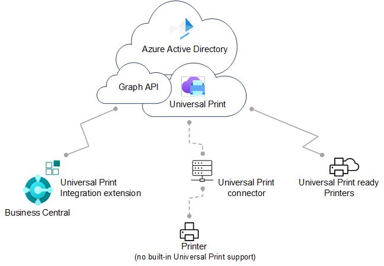
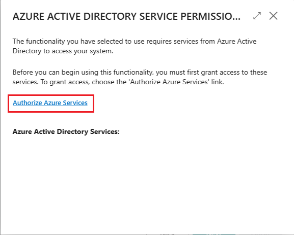
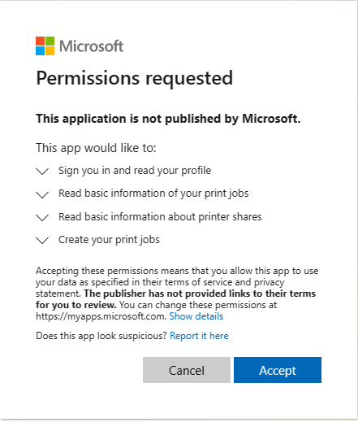

Drucker für Universal Print einrichten
[!INCLUDE[azure-ad-to-microsoft-entra-id](~/../shared-content/shared/azure-ad-to-microsoft-entra-id.md)]Universal Print ist ein auf Microsoft 365 basierender Abonnement-Service, der vollständig über Microsoft Azure ausgeführt wird. Sie erhalten eine zentralisierte Druckerverwaltung über das Universal Print-Portal. Business Central stellt in Universal Print eingerichtete Drucker Clientbenutzern über die Erweiterung Universal Print-Integration zur Verfügung.

Für die vollständige Einrichtung müssen Sie in Microsoft Azure über das Azure-Portal und in Business Central arbeiten. Die Einrichtung ist wie in diesem Artikel beschrieben in zwei Hauptaufgaben unterteilt:
- Richten Sie Universal Print in Microsoft Azure ein und fügen Sie die Drucker, die Sie in Business Central verwenden möchte, in einer Druckfreigabe hinzu. Navigieren Sie zu diesem Abschnitt.
- Fügen Sie in Business Central die Drucker aus den Druckfreigaben in Universal Print hinzu. Wechseln Sie zu diesem Abschnitt für online oder hierher für lokal.
Voraussetzungen
Unterstützte Drucker
Business Central unterstützt dieselben Drucker wie Universal Print, die entweder Universal Print-kompatible oder nicht kompatible Drucker sein können. Nicht kompatible Drucker können nicht direkt mit Universal Print kommunizieren. Daher benötigen sie eine zusätzliche Anschlusssoftware, die von Universal Print bereitgestellt wird. Einige ältere Drucker werden möglicherweise nicht unterstützt.
Universal Print:
Ein Universal Print-Abonnement/eine Lizenz für Ihre Organisation
Erfahren Sie mehr unter Universal Print lizenzieren.
Sie verfügen in ID mindestens über die Rolle Druckeradministrator Microsoft Entra .
Um Universal Print verwalten zu können, muss Ihr Konto in ID mindestens über die Rolle Druckeradministrator Microsoft Entra verfügen. Diese Rollen werden nur für die Verwaltung von Universal Print benötigt. Es ist nicht erforderlich, dass Personen sie Einrichten und die Drucker von Business Central.
Business Central online and lokal:
- Business Central 2021 Veröffentlichungszyklus 1 oder später.
Die Erweiterung Universal Print-Integration ist installiert.
Diese Erweiterung wird standardmäßig als Teil von Business Central online und vor Ort veröffentlicht und installiert. Sie können überprüfen, ob es auf der Seite Erweiterungsverwaltung installiert ist. Weitere Informationen erhalten Sie unter Installieren und Deinstallieren von Erweiterungen in Business Central.
Business Central nur vor Ort:
- Microsoft Entra-ID oder NavUserPassword-Authentifizierung ist konfiguriert. > [!NOTE] > Die Universal Print-Erweiterung unterstützt keine Service-to-Service (S2S)-Authentifizierung. Sie erfordert einen angemeldeten Benutzer, um Druckaufträge über die Graph-API an den universellen Druckdienst zu senden.
Eine Anwendung für Business Central ist in Ihrem Microsoft Entra-Mandanten und Business Central registriert.
Wie andere Azure-Dienste, mit denen Business Central arbeitet, benötigt Universal Print eine App-Registrierung für Business Central in Microsoft Entra-ID. Die App-Registrierung bietet Authentifizierungs- und Autorisierungsdienste zwischen Business Central und Universal Print.
Ihre Bereitstellung verwendet möglicherweise bereits eine App-Registrierung für andere Azure-Dienste, z. B. Power BI. Wenn ja, verwenden Sie auch die vorhandene App-Registrierung für Universal Print, anstatt eine neue hinzuzufügen. In diesem Fall müssen Sie lediglich die App-Registrierung so ändern, dass sie die relevanten Druckberechtigungen für die Microsoft Graph-API enthält: PrinterShare.ReadBasic.All, PrintJob.Create und PrintJob.ReadBasic.
Befolgen Sie die unter Registrieren Sie eine Anwendung in Microsoft Entra-ID beschriebenen Schritte, um eine App zu registrieren und die richtigen Berechtigungen festzulegen.
Universal Print und Drucker in Microsoft Azure einrichten
Bevor Sie mit der Verwaltung von Universal Print-Druckern in Business Central beginnen können, müssen Sie Aufgaben ausführen, um Universal Print in Azure mit den gewünschten Druckern zu verwenden.
Ausführliche Anweisungen zum Einrichten finden Sie unter Erste Schritte: Universal Print einrichten in der Universal Print-Dokumentation. Hier ist eine Übersicht über die Schritte, die Sie ausführen müssen. Die meisten dieser Schritte werden im Azure-Portal ausgeführt.
Weisen Sie sich und anderen Benutzern Universal Print-Lizenzen zu.
Wie Sie die Lizenz zuweisen, hängt davon ab, ob Sie sich online oder lokal in Business Central integrieren.
Mit Business Central online weisen Sie Lizenzen über das Microsoft 365 Admin-Center zu.
Weitere Informationen finden Sie unter Microsoft Admin Center-Hilfe – Benutzern Lizenzen zuweisen.
Mit Business Central-On-premises weisen Sie Lizenzen in Ihrem Mandanten über das Azure-Portal zu.
Weitere Informationen finden Sie unter Azure Directory – Lizenzen im -Portal zuweisen oder entfernen.
Installieren Sie den Universal Print-Konnektor zum Registrieren von Druckern, die nicht direkt mit Universal Print kommunizieren können.
Die meisten Drucker auf dem Markt können nicht nicht direkt mit Universal Print kommunizieren, deshalb müssen Sie den Universal Print-Konnektor installieren. Weitere Informationen finden Sie unter Installieren des Universal Print-Konnektors.
Registrieren Sie Ihre Drucker in Universal Print.
Durch die Registrierung eines Druckers wird Universal Printer auf den Drucker aufmerksam.
Befolgen Sie bei Druckern, die direkt mit Universal Print kommunizieren können, die vom Druckerhersteller angegebenen Schritte.
Registrieren Sie bei anderen Druckern die Drucker über den Universal Print-Konnektor.
Weitere Informationen finden Sie unter Druckerregistrierung.
Druckereigenschaften ändern (optional)
Nachdem ein Drucker registriert wurde, können Sie Druckereigenschaften wie Standardeinstellungen anzeigen und ändern.
Weitere Informationen finden Sie unter Verwalten der Druckereinstellungen mit dem Universal Print Portal.
Teilen Sie die Drucker mit Benutzern.
Jeder Drucker, den Sie in Business Central verwenden möchten, muss in Universal Print einer Druckerfreigabe hinzugefügt werden. Jeder Benutzer, der Zugriff auf den Drucker benötigt, muss als Mitglied der Druckerfreigabe hinzugefügt werden. Erfahren Sie mehr unter Teilen a Printer.
Tipp
Sie können Benutzer später jederzeit hinzufügen oder entfernen. Weitere Informationen finden Sie unter Benutzerberechtigungen für Drucker Teilen konfigurieren.
Aktivieren Sie die Dokumentkonvertierung.
Universal Print rendert Inhalte für den Druck im XPS-Format. Einige ältere marktübliche Drucker unterstützen das Rendern von XPS-Inhalten in vielen Fällen nicht, sondern nur das PDF-Format. Das Drucken auf diesen Druckern schlägt fehl, es sei denn, Universal Print ist so eingerichtet, dass Dokumente in das vom Drucker unterstützte Format konvertiert werden.
Weitere Informationen finden Sie unter Dokumentenkonvertierung.
Jetzt können Sie die Drucker Business Central hinzufügen, Standarddrucker für Berichte einrichten und drucken.
Drucker in Business Central Online hinzufügen
Nachdem die Drucker in Universal Print eingerichtet und freigegeben wurden, können Sie sie zur Verwendung in Business Central hinzufügen. Es gibt zwei Möglichkeiten, Universal Print-Drucker hinzuzufügen. Sie können die Drucker auf einmal oder einzeln hinzufügen.
Wenn Sie Drucker einzeln hinzufügen, können Sie denselben Universal Print-Drucker in Business Central mehrmals einrichten. Anschließend können Sie für jeden hinzugefügten Drucker die Druckeinstellungen wie Papierfach, Größe und Ausrichtung ändern. Auf diese Weise können Sie Drucker für verschiedene Berichte und Dokumente einrichten, für die besondere Ausgabeanforderungen gelten.
Hinweis
Verwenden Sie Business Central lokal? Wenn ja, gehen Sie zum nächsten Abschnitt, die erstmalige Einrichtung ist etwas anders.
- Wählen Sie das Symbol
 Symbol. Geben Sie Druckerverwaltung ein, und wählen Sie dann den entsprechenden Link.
Symbol. Geben Sie Druckerverwaltung ein, und wählen Sie dann den entsprechenden Link. Klicken Sie auf Universal Print, und wählen Sie dann eine der folgenden Optionen aus:
- Alle Universal Print-Drucker hinzufügen, um alle Drucker hinzuzufügen, die noch nicht hinzugefügt wurden. Sie können diese Option auch dann verwenden, wenn bereits Drucker hinzugefügt wurden.
- Universal Print-Drucker hinzufügen, um einen bestimmten Drucker hinzuzufügen.
Folgen Sie den Anweisungen auf dem Bildschirm.
Wenn Sie Alle Universal Print-Drucker hinzufügen auswählen, beginnt die Einrichtung Universal Print-Drucker hinzufügen.
Wenn Sie Universal Print-Drucker hinzufügen auswählen, erscheint die Seite Universal Print-Drucker – Einstellungen. Füllen Sie das Feld Name aus, und wählen Sie dann die Auslassungspunkte ... neben dem Feld Druckfreigabe in Universal Print aus, um die Druckerfreigabe mit dem Universal Print-Drucker auszuwählen. Füllen Sie die verbleibenden Felder je nach Bedarf aus. Fahren Sie über ein Feld, um eine Kurzbeschreibung zu lesen..
Nachdem ein Drucker hinzugefügt wurde, können Sie seine Einstellungen über Druckerverwaltung anzeigen und ändern. Wählen Sie einfach den Drucker und dann Druckereinstellungen bearbeiten aus.
Drucker in Business Central lokal hinzufügen
Bevor ein Benutzer Universal Print-Drucker zu Business Central hinzufügen oder verwenden kann, muss er den Zugriff auf die von Universal Print verwendeten Azure-Dienste autorisieren und ihm die Berechtigung für Daten und Vorgänge erteilen, z. B.:
- Anmelden und lesen des Benutzerprofils
- Lesen grundlegender Druckauftragsinformationen
- Erstellen von Druckaufträgen
Dies geschieht in der Regel beim ersten Herstellen einer Verbindung mit der für Universal Print verwendeten in Azure registrierten App. In Business Central Online erfolgt dieser Autorisierungsfluss nahtlos, ohne Benutzerinteraktion. Aber Business Central lokal funktioniert anders. Es erfordert, dass Sie oder jeder andere Benutzer, der Universal Print-Drucker verwenden möchte, den Authentifizierungsablauf initiiert—normalerweise nur einmal. Die direkteste Methode wird in den folgenden Schritten beschrieben. Ein weniger direkter Weg ist die Verbindung mit einem anderen integrierten Dienst, der dieselbe registrierte Azure-App verwendet, wie Power BI oder OneDrive. Jeder Benutzer muss diese Aufgabe normalerweise nur einmal ausführen.
Hinweis
Wenn Sie ein Administrator sind, empfehlen wir Ihnen, diese Aufgabe vor anderen Benutzern abzuschließen. Informieren Sie anschließend die Benutzer, die Universal Print-Drucker verwenden müssen, wie dies zu tun ist. Wenn die von Azure registrierte App für Universal Print die Zustimmung des Administrators für API-Berechtigungen erfordert, ist es einfacher, wenn Sie die Zustimmung im Namen der Organisation erteilen. Sie können die Administratoreinwilligung über das Azure-Portal erteilen, oder wenn Sie die folgenden Schritte ausführen.
Erstmaliges Herstellen einer Verbindung mit Universal Print
Führen Sie diese Schritte aus, um zum ersten Mal eine Verbindung mit dem Universal Print-Dienst herzustellen.
- Wählen Sie die Symbol. Geben Sie Druckerverwaltung ein, und wählen Sie dann den entsprechenden Link.
- Wählen Sie Universal Print > Alle Universal Print-Drucker hinzufügen, um den Universal Print-Drucker hinzufügen-Assisted Setup Guide (Assistenten).
Befolgen Sie die Anweisungen auf dem Bildschirm, bis Sie zur Seite MICROSOFT ENTRA-SERVICEBERECHTIGUNGEN gelangen.

Wählen Sie den Link Azure-Dienste autorisieren aus.
Wenn die Seite Berechtigung angefordert angezeigt wird, lesen Sie sie sorgfältig durch und wählen Sie Akzeptieren, um zuzustimmen und fortzufahren. Wenn Sie als Administrator arbeiten, können Sie Zustimmung im Namen der Organisation auswählen, wenn Sie für alle Benutzer zustimmen möchten.
 an.
Falls Sie dazu aufgefordert werden, melden Sie sich mit Ihrem Namen und Kennwort an.
Wenn die Autorisierung erfolgreich abgeschlossen wurde, kehren Sie zur Seite Universal Print-Drucker hinzufügen zurück. Wählen Sie Weiter > Beenden, um die Einrichtung abzuschließen.
Nachdem ein Drucker hinzugefügt wurde, können Sie seine Einstellungen über Druckerverwaltung anzeigen und ändern. Wählen Sie einfach den Drucker und dann Druckereinstellungen bearbeiten aus.
Sobald Sie die Erstanmeldung abgeschlossen haben, können Sie die Universal Print-Drucker zum Drucken von Berichten und anderen Druckaufträgen verwenden. Weitere Informationen finden Sie unter Drucken eines Berichts. Wenn Sie Drucker hinzufügen, entfernen oder ändern möchten, kehren Sie einfach zurück zur Seite Druckverwaltung zurück und wählen Sie Universal Print.
Häufige Probleme und Lösungen
In diesem Abschnitt erfahren Sie mehr über die häufigsten Probleme, auf die Benutzer möglicherweise stoßen, wenn sie versuchen, Universal Print-Drucker einzurichten oder zu verwenden.
Sie haben keinen Zugriff auf den Drucker <your-printer>.
Wenn ein Benutzer diese Meldung erhält, wenn er versucht, einen Beleg auf einem Universal Print-Drucker zu drucken, kann dies durch eine der folgenden Bedingungen verursacht werden:
- Dem Benutzer ist keine Universal Print-Lizenz für sein Microsoft 365 - oder Azure Active AD-Konto zugewiesen.
- Der Benutzer wird der Druckerfreigabe in Universal Print nicht zugewiesen.
- (Lokal) Die für Universal Print verwendete Azure-App-Registrierung funktioniert nicht oder wurde kürzlich geändert, seit sich der Benutzer das letzte Mal angemeldet hat.
- (Lokal) Der Benutzer hat sich noch nicht bei der von Azure registrierten App für die Universal Print-App angemeldet und zum ersten Mal zugestimmt.
Fehler beim Abrufen von freigegebenen Druckern.
Wenn ein Benutzer diese Meldung erhält, wenn er versucht, einen Universal Print-Drucker über die Seite Druckerverwaltung hinzuzufügen, liegt dies normalerweise daran, dass er sich noch nicht bei der von Azure registrierten App für Universal Printer-App angemeldet und zum ersten Mal zugestimmt hat.
Nächste Schritte
Siehe auch
Übersicht der Drucker
E-Mail-Drucker einrichten
Einen Bericht drucken
Arbeiten mit Business Central
Ausführen von Stapelverarbeitungen
Kostenlose E-Learning-Module für Business Central finden Sie hier